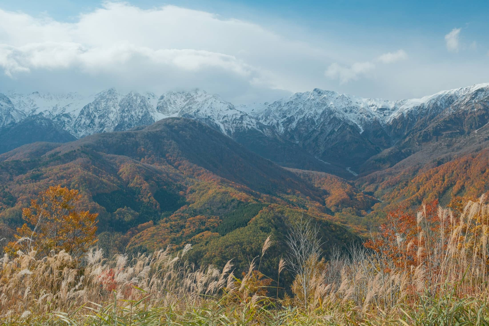
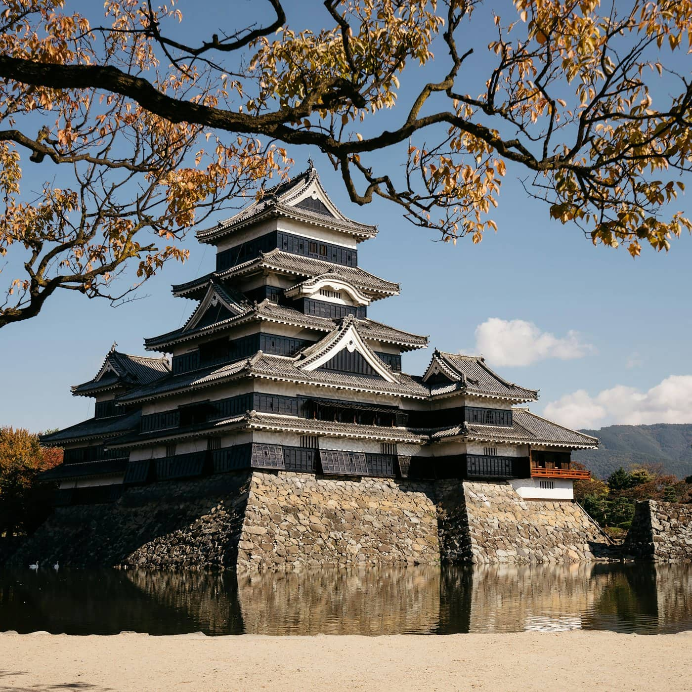
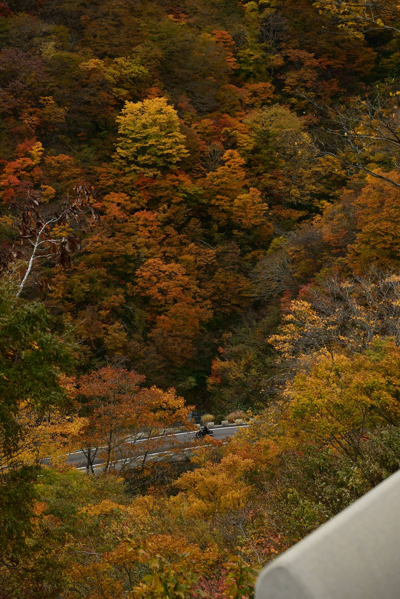
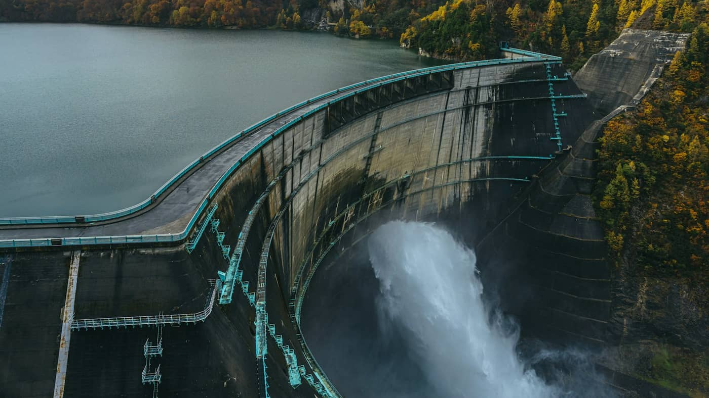
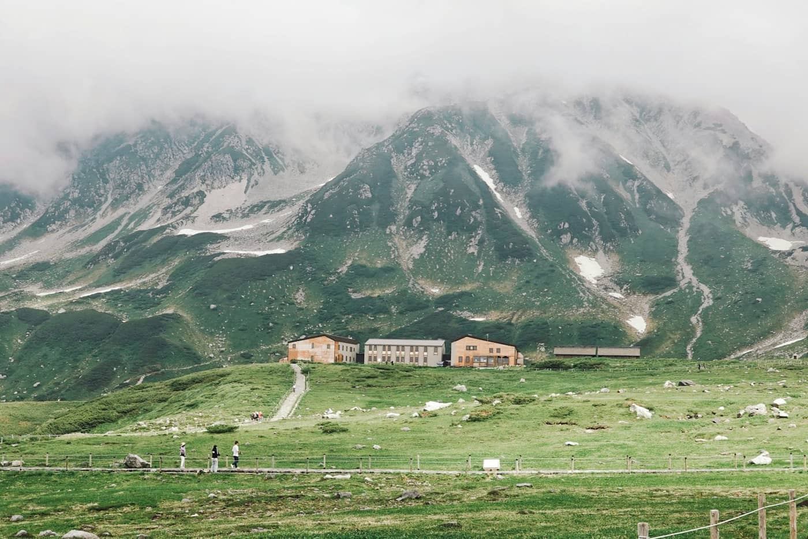
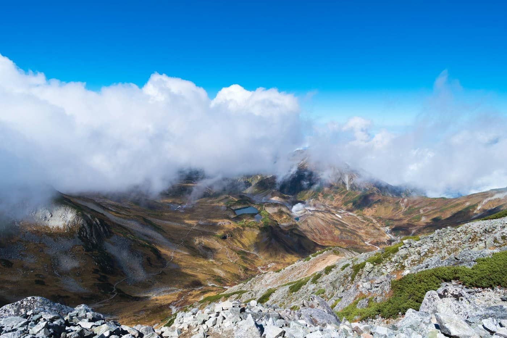
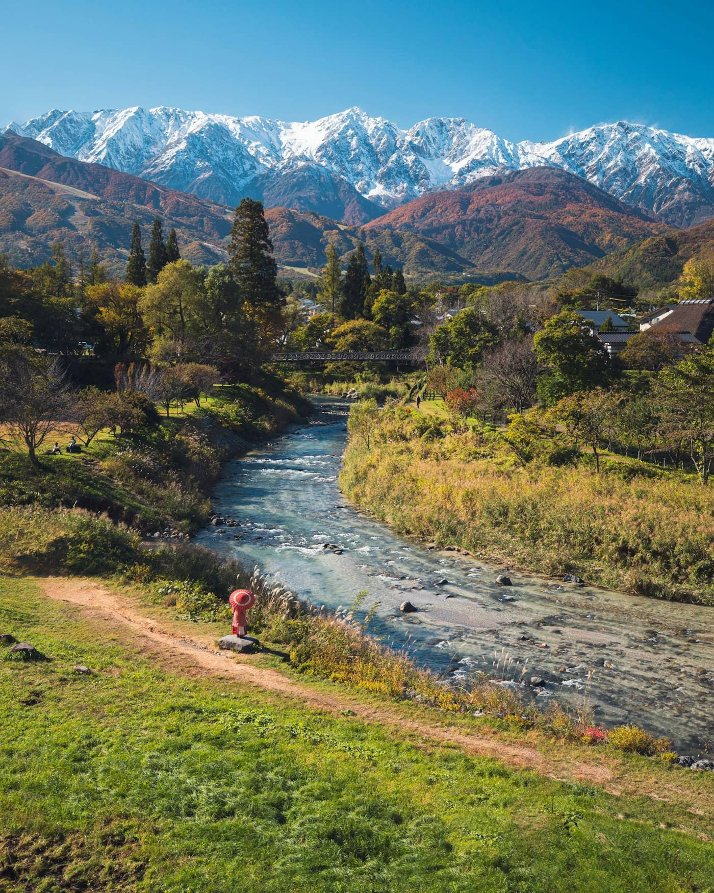
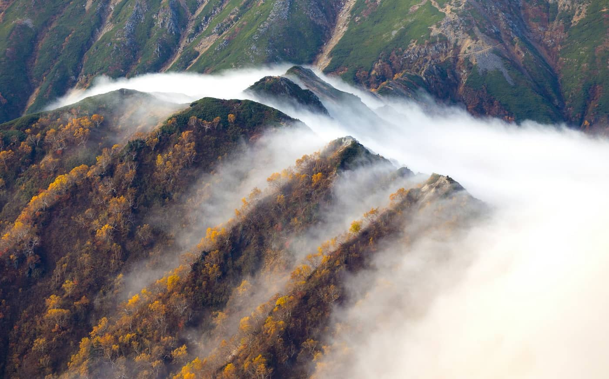
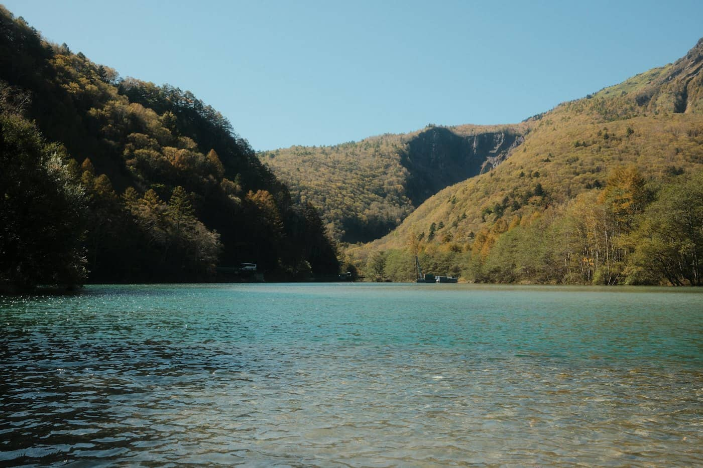
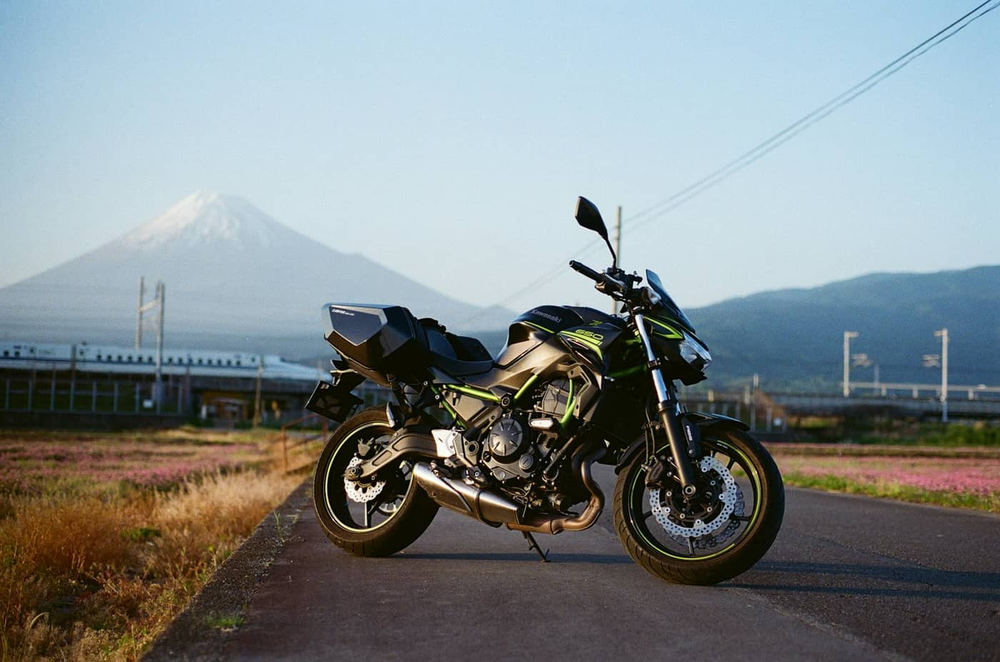

UTSUKUSHIGAHARA美ヶ原高原
- 草原と大きな空、遠くの山並み。走る道そのものが見どころ
- 10月の午後はかなり寒い。タンデムは風対策を
- 雲で山が隠れると魅力が大きく下がる

秋の北アルプスを、Forza で巡る3日間。
扇沢から“逆ルート”で立山黒部に入り、標高2,450mの室堂を日帰りで歩く旅。
1日目に松本で彼女と合流して白馬へ。2日目は宿から扇沢へ上がり、アルペンルートを乗り継いで室堂を往復。3日目は白馬の朝景色を楽しんでから松本経由で東京へ戻ります。
東京 → 調布IC → 松本（合流）→ 美ヶ原 → 白馬 Pension BONNARD
出発前に満タンにしておく。
首都高には乗らない（ETC専用入口が多いため）。
「一般」または「ETC／一般」レーンで通行券を受け取る。
コーヒー・トイレ・ストレッチ。
ENEOS 松本インターTS。この旅でいちばん大事な給油ポイント。
高原散策と、北アルプスの大パノラマ。
午後の高原は冷える。タンデムは特に風で体温を奪われやすい。
2日目は5時起き。できるだけ早く寝る。


白馬 → 扇沢 → 黒部ダム → 黒部平 → 大観峰 → 室堂 → みくりが池・雷鳥荘方面 → 同じ道を戻る → 白馬
早朝の山道は冷える。路面の凍結に注意。
便は選ばない。
実際の便と乗り換えの待ち時間しだい。
到着時刻でコースを決める（下の A／B／C）。
最終便に追われない時間に。
「扇沢 ⇄ 室堂 往復」のきっぷに乗り物はすべて含まれます。黒部ダムの堰堤だけは徒歩。帰りはまったく同じ道を戻ります。標高図は横にスクロールできます →
3〜4時間を見込む、いちばん充実したコース。天気・路面・彼女の体力がすべて良いときだけ最後まで。
いちばんおすすめの“確実な日帰り版”。景色は十分に楽しめて、最終便に追われない。
雷鳥沢へは無理に下りない。安全と帰りの余裕を最優先に。



白馬 → 大出公園 → 白馬岩岳 → 青木湖 → 松本で見送り → 調布IC → 東京
ENEOS アルペンロード神城SS。
晴れた朝を優先。
3日目のメイン。ゴンドラで上がって景色を楽しむだけ。
下の「給油計画」を参照。
三連休最終日の渋滞しだい。



タンク約12L × 燃費約30km/L ＝ 理論上の航続 約360km。高速・タンデム・山道・低温・加減速を考えて、250〜280km を「安心して給油する区間」とします（下のバーの斜線部分）。
出発前に必ず満タン。東京 → 調布 → 中央道 → 松本まで。
ENEOS 松本インターTS（松本IC近く・6:00〜23:00ごろ）で満タンにしてから迎えへ。Day 2 の朝は山麓のスタンドがまだ開いていないので、ここで入れた分で扇沢まで往復する。
ENEOS アルペンロード神城SS（8:00〜18:00ごろ）でチェックアウト後に満タン。
元の計画は「神城で満タン → そのまま東京」ですが、その場合は神城から東京まで約323kmで、安心区間（250〜280km）を超えます。彼女を見送ったあと、松本IC付近でもう一度満タンにしてから高速に乗るのがおすすめ。
Forza には ETC がないので、東京都内 → 一般道 → 調布IC → 中央道 → 松本IC がいちばん確実。2026年は首都高の入口の多くが ETC専用（初台・四つ木・駒形など）なので、少しの時短のために首都高へ入らないこと。
通行券を取る／現金・クレジットカードで支払い
一般車として通行できる
ETCなしでは通れない
通常の入口として計画しない
Google マップ／Yahoo!カーナビで「中央自動車道 調布IC」を最初の経由地に設定。一般道で調布まで → そこから中央道。ETC専用の首都高入口に連れて行かれるのを防げる。
通行券が出る入口なら通行券を取る。手前に定額区間があれば現地の案内どおりに支払う。出口の松本ICも「一般」「ETC・一般」で通行券を渡して精算（現金・クレジット可）。
絶対にバックしない。「サポート」レーンに進んで停車し、係員の指示に従う。サポートレーンは ETC故障・カード異常などのためのもの。
MF10・約33,000km、前回のオイル交換から5,000km以上、後輪はパンクで新品に交換したばかり。チェックした内容はこの端末に保存されます。
修理キットはトレッド面の小さな釘穴だけ。サイドの損傷・大きな裂け目・ホイールの歪み・バルブ破損はロードサービスへ。
松本 → 大王わさび農場 → 安曇野 → 白馬 に変更。
室堂の散策を短縮。みくりが池 ＋ 雷鳥荘方面まで。雷鳥沢へは無理に下りない。
一日中並んで時間を無駄にしない。白馬・青木湖・大町・安曇野の日帰りに切り替え、10/12 のキャンセル・当日券の可能性も確認。
扇沢への道に凍結のおそれがあればForza で無理に上がらない。10/9 の最新の天気・積雪・道路情報で判断。

美ヶ原は晴れたときだけ。翌日のための体力を残す。
着いた時刻でコースを決め、帰りに余裕を持たせる。
入口を間違えたら、バックせずにサポートレーンへ。